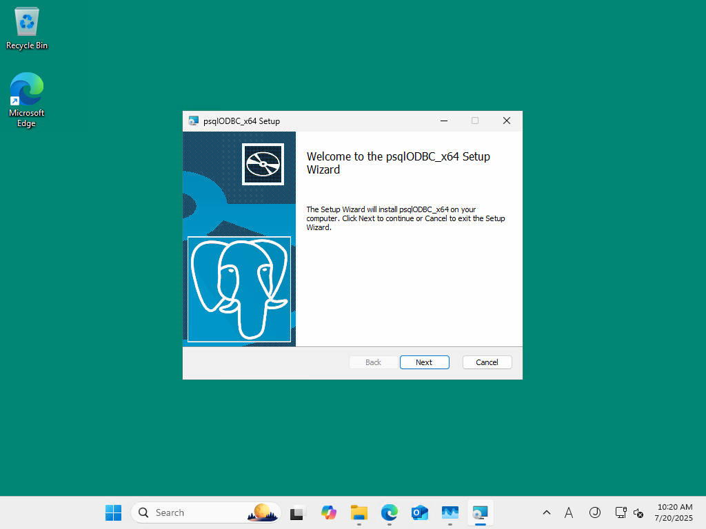
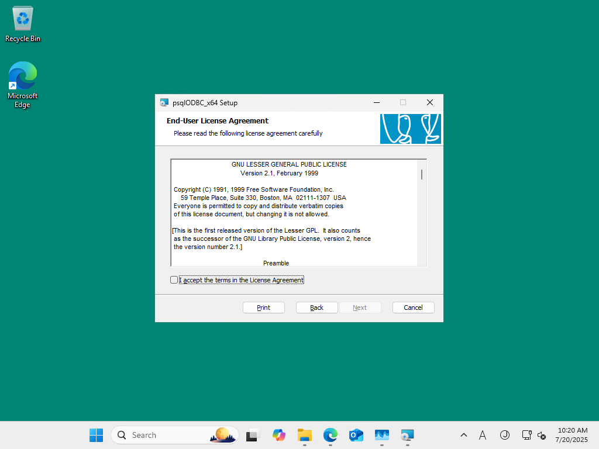
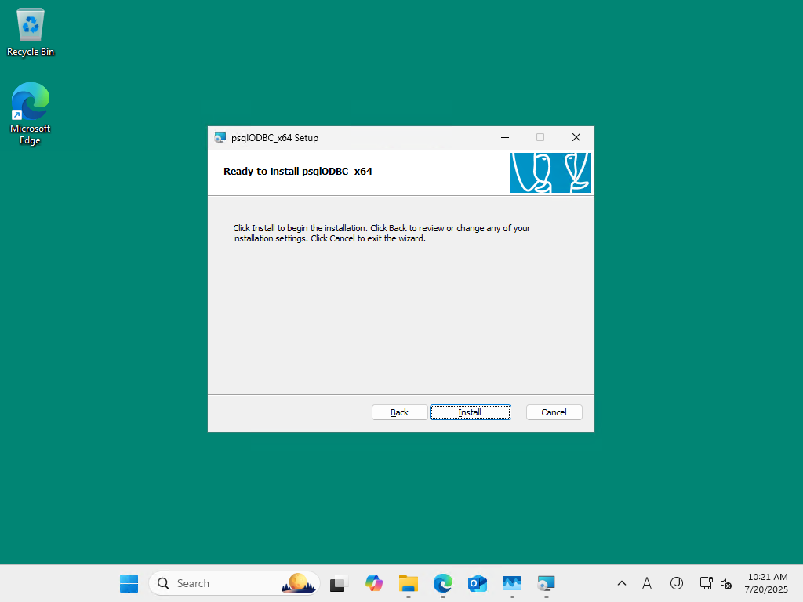
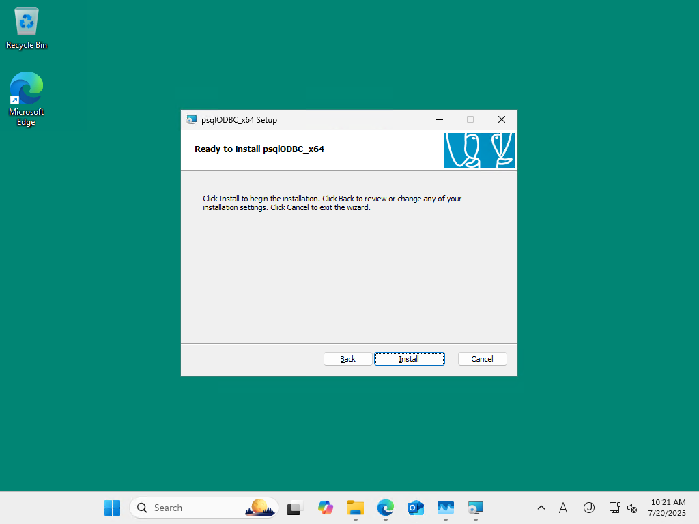

psqlodbc_x64.msi
つぎのセットアップをダウンロードして、インストールしようとしています。
https://ftp.postgresql.org/pub/odbc/releases/REL-17_00_0006/psqlodbc_x64.msi
  

エラーが発生しました。 Ignore で強行
エラーが発生しました。 Ignore で強行
エラーが発生しました。 Ignore で強行
エラーが発生しました。 Ignore で強行
インストーラーのエラーを 4 回無視してインストールが完了しました。
つぎに ODBC データソースの設定をしていきます。
この Windows 11 の odbcad32 は 2 つです:
ODBC Data Source Administrator (32-bit)(x86 版)ODBC Data Source Administrator (64-bit)(Arm64 版)
ODBC Data Sources (64-bit) を起動:
Add で PostgreSQL Unicode(x64) を選択:
エラーが発生して追加ができませんでした。
---------------------------
Microsoft ODBC Administrator
---------------------------
The setup routines for the PostgreSQL Unicode(x64) ODBC driver could not be loaded due to system error code 193: .
---------------------------
OK
---------------------------
---------------------------
Driver's ConfigDSN, ConfigDriver, or ConfigTranslator failed
---------------------------
Errors Found:
The setup routines for the PostgreSQL Unicode(x64) ODBC driver could not be loaded due to system error code 193: .
---------------------------
OK
---------------------------
追加ができませんでしたので、検証はこれで終了です。